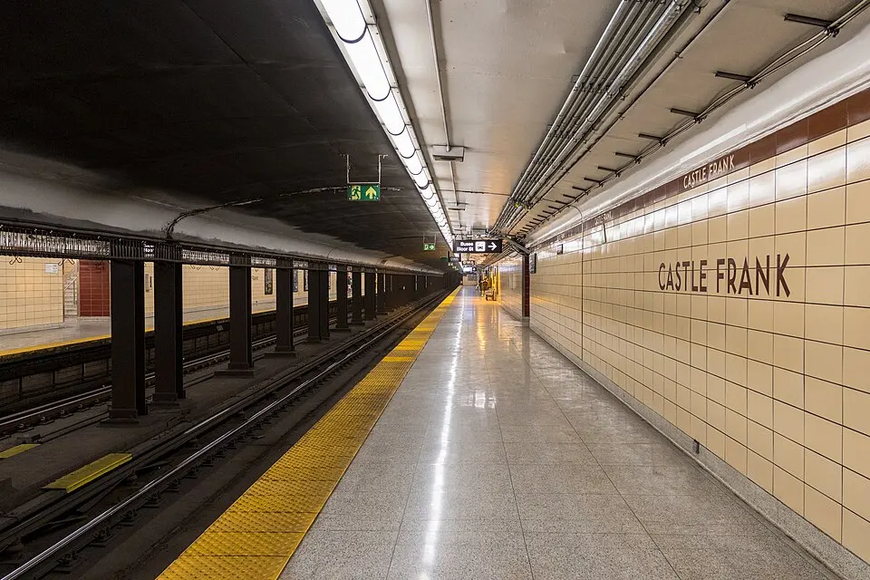

Signal
SignalStation atlas / Castle Frank
Station history
Castle Frank


Station history
The Bloor–Danforth line entered service at Castle Frank beside the subway’s separate crossing of the Rosedale ravine.
A second exit opened in December at the west side of the bus terminal.
Two elevators entered service at Castle Frank.